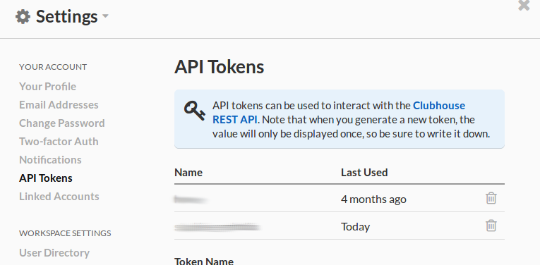

A simple API wrapper library for accessing the https://clubhouse.io/ API.
By default, the package returns queries from the V2 API - full documentation can be found here https://api.clubhouse.io/api/v2.
Installing
The pre-release version of the package can be pulled from GitHub using the devtools package:
# install.packages("devtools")
devtools::install_github("SymbolixAU/clubhouser")What else do I need?
You need an access token to retrieve and put records into Clubhouse.
If you / your team has a Clubhouse account, bring up the Settings menu (top right) and select “API tokens” from the list on the left.

Download and save it somewhere safe. I recommend adding it to your .Rprofile and retrieving it with Sys.getenv("CH_TOKEN")
If your team doesn’t use Clubhouse…..I can’t help you. If you are an agile team it’s worth a look - it’s more structured than Trello and much more user friendly than Jira. And, no they haven’t given me any money (though, if someone is offering….)
Setting up
Telling clubhouser about your API token
You can send your token as an argument to the API functions. If you are a little lazy efficient you can also use one of the package’s convenience functions to set it once for all subsequent API calls to use.
To set:
set_token("mysecrettoken")To retrieve your token (if needed):
Changing the API version
By default, the package returns queries from the V2 API but you can override this on a function-by-function basis by setting the url parameter. You can also change the default. For example, if you want to be brave and use the latest, beta version you would:
set_url(url = "https://clubhouse.io/api/beta")’GET’ting records
You can list all the records for a single API endpoint (ch_list_all), or you can retrieve a single record (ch_get_one).
ch_list_all
You can list all records from the following endpoints
“categories”, “epic-workflow”, “epics”, “files”, “labels”, “linked-files”, “members”, “milestones”, “projects”, “repositories”, “stories”,“teams”, “workflows”
You can pull back all the details:
library(clubhouser)
set_token("foo")
ch_list_all(endpoint = "categories",response_type = "full")
# archived color created_at entity_type external_id id name
# 1 TRUE foo 2016-12-31T12:30:00Z foo foo 123 foo
# type updated_at
# 1 foo 2016-12-31T12:30:00ZOr just a minimal set (useful if you just want to filter and get an id or two so you can retrieve just those records).
ch_list_all(endpoint = "categories",response_type = "minimal")
# entity_type id name
# 1 foo 123 fooReturn one record
If you know the id of the record you want to retrieve you can get that record. If I want to get the full information about the Story with id 123, it’s as simple as:
# This returns a list object with all the story details
res <- ch_get_one(id = 123L, endpoint = "stories")
# From here you can access the tasks on the Story card
res$tasks
# complete completed_at created_at description
# 1 TRUE 2016-12-31T12:30:00Z 2016-12-31T12:30:00Z foo
# entity_type external_id id mention_ids
# 1 foo foo 123 12345678-9012-3456-7890-123456789012
# owner_ids position story_id
# 1 12345678-9012-3456-7890-123456789012 123 123
# updated_at
# 1 2016-12-31T12:30:00Z
# Or the point estimate
res$estimate
# [1] 123
# or the description
res$description
# [1] "foo"
#....you get the idea